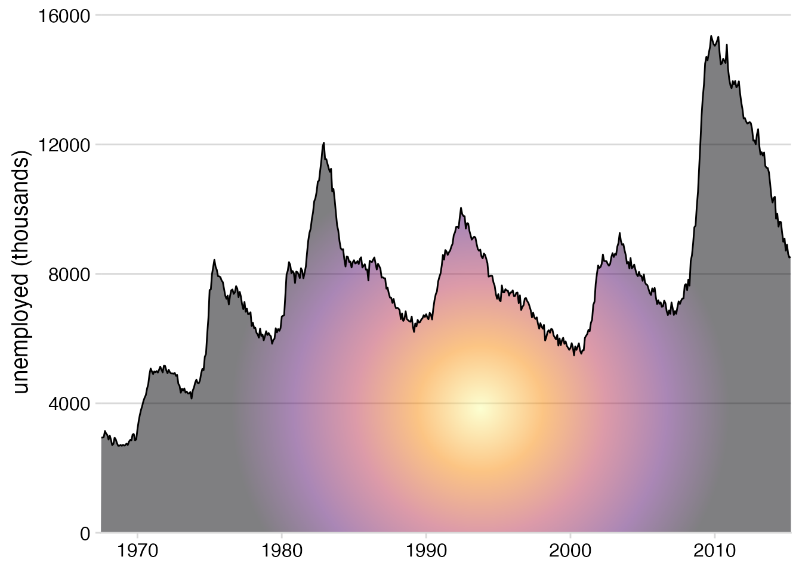
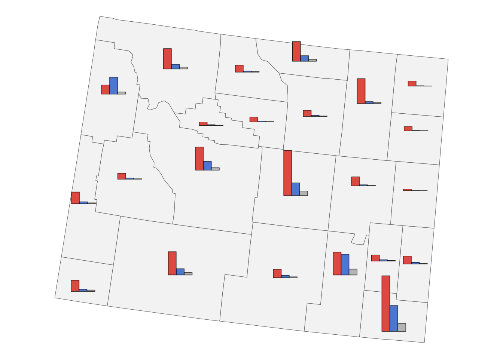
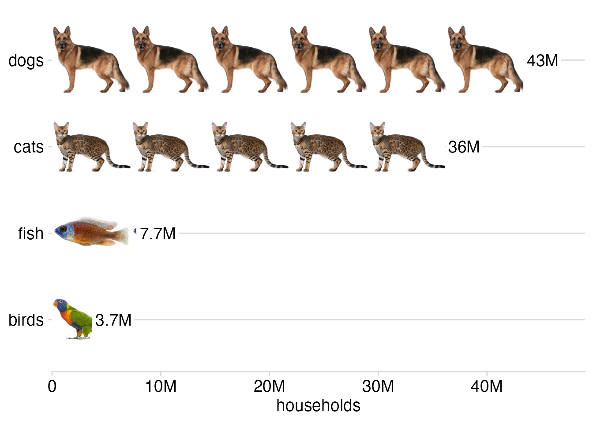

library(tidyverse)
library(grid)
library(cowplot)
library(palmerpenguins)
library(sf)Effective Data Visualization with ggplot2
Gradient and pattern fills, solutions to exercises
Load required packages
Solutions, Section 1
Exercise 1.1: Make your own gradient for a plot with gradient fill. Try both a linear gradient (made with grid::linearGradient()) and a radial gradient (made with grid::radialGradient()). Try different colors, gradient directions, and other modifications these functions allow you to make.
# define a linear gradient object
inferno_gradient <- linearGradient(
# colors created with viridisLite::inferno(5)
colours = c("#000004FF", "#56106EFF", "#BB3754FF", "#F98C0AFF", "#FCFFA4FF"),
# gradient runs diagonally
x1 = 0, y1 = 1,
x2 = 1, y2 = 0,
group = FALSE
)
ggplot(economics, aes(date, unemploy)) +
geom_area(fill = inferno_gradient, alpha = 0.5) +
geom_line() +
scale_x_date(
name = NULL,
expand = expansion(mult = c(0, 0))
) +
scale_y_continuous(
name = "unemployed (thousands)",
expand = expansion(mult = c(0, 0.05))
) +
theme_minimal_hgrid()
# define a radial gradient object
radial_inferno <- radialGradient(
colours = rev(c("#000004FF", "#56106EFF", "#BB3754FF", "#F98C0AFF", "#FCFFA4FF")),
cx1 = 0.55, cx2 = 0.55,
cy1 = 0.25, cy2 = 0.25,
group = FALSE
)
ggplot(economics, aes(date, unemploy)) +
geom_area(fill = radial_inferno, alpha = 0.5) +
geom_line() +
scale_x_date(
name = NULL,
expand = expansion(mult = c(0, 0))
) +
scale_y_continuous(
name = "unemployed (thousands)",
expand = expansion(mult = c(0, 0.05))
) +
theme_minimal_hgrid()
Exercise 1.2: Make your own patterns for the bar plot with pattern fill.
crosshatch1 <- pattern(
grobTree(
rectGrob(gp = gpar(fill = "#FAFEF0C0", col = NA)),
segmentsGrob(
x0 = c(0, 0.5), y0 = c(0, 0),
x1 = c(0.5, 1), y1 = c(1, 1),
gp = gpar(col = "#182124", lwd = 1.5)
),
vp = viewport(width = unit(5, "mm"), height = unit(5, "mm"))
),
width = unit(5, "mm"), height = unit(5, "mm"),
extend = "repeat"
)
crosshatch2 <- pattern(
grobTree(
rectGrob(gp = gpar(fill = "#F0FAFEC0", col = NA)),
segmentsGrob(
x0 = c(0, 0), y0 = c(0.25, 0.75),
x1 = c(1, 1), y1 = c(0.25, 0.75),
gp = gpar(col = "#182124", lwd = 1.5)
),
vp = viewport(width = unit(5, "mm"), height = unit(5, "mm"))
),
width = unit(5, "mm"), height = unit(5, "mm"),
extend = "repeat"
)
crosshatch3 <- pattern(
grobTree(
rectGrob(gp = gpar(fill = "#FEF0FAC0", col = NA)),
segmentsGrob(
x0 = c(0, 0.5), y0 = c(1, 1),
x1 = c(0.5, 1), y1 = c(0, 0),
gp = gpar(col = "#182124", lwd = 1.5)
),
vp = viewport(width = unit(5, "mm"), height = unit(5, "mm"))
),
width = unit(5, "mm"), height = unit(5, "mm"),
extend = "repeat"
)
patterns <- list(
crosshatch1, crosshatch2, crosshatch3
)
penguins |>
count(species) |>
mutate(species = fct_reorder(species, n)) |>
ggplot(aes(n, species, fill = species)) +
geom_col(color = "gray30", linewidth = 0.3) +
scale_fill_manual(
name = NULL,
# here we're using patterns instead of colors
values = patterns,
guide = guide_legend(
position = "bottom",
reverse = TRUE
)
) +
scale_x_continuous(
name = "count",
expand = expansion(mult = c(0, 0.05))
) +
scale_y_discrete(
name = NULL
) +
theme_minimal_vgrid(
color = "gray30",
line_size = 0.3
)
Solutions, Section 2
Data preparation:
# data taken from: https://github.com/john-guerra/US_Elections_Results/tree/master
votes_2016 <- read_csv("https://wilkelab.org/dataviz_shortcourse/datasets/2016_US_County_Level_Presidential_Results.csv") |>
mutate(
fips = str_pad(combined_fips, 5, pad = "0"),
state = state_abbr
)
votes_long <- votes_2016 |>
mutate(
other = total_votes - votes_dem - votes_gop
) |>
select(
state, fips, democratic = votes_dem, republican = votes_gop, other
) |>
pivot_longer(c(-state, -fips), names_to = "party", values_to = "votes")
# load geometry data
counties <- readRDS(url("https://wilkelab.org/dataviz_shortcourse/datasets/US_counties.rds")) |>
mutate(
fips = as.character(GEOID),
state = state_code
)Exercise 2.1: Use side-by-side bar plots instead of pie charts.
Solution: First we generate the patterns.
make_bar_plot <- function(data) {
data |>
mutate(
party = fct_relevel(party, 'republican', 'democratic', 'other')
) |>
ggplot() +
aes("", votes, fill = party) +
geom_col(color = "black", linewidth = 0.2, position = "dodge") +
scale_fill_manual(
values = c(democratic = '#4B77D0', republican = '#DB4940', other = "gray70"),
guide = "none"
) +
theme_void()
}
make_bar_pattern <- function(data) {
p <- make_bar_plot(data)
pattern(
ggplotGrob(p),
extend = "none",
group = FALSE
)
}
vote_bars <- votes_long |>
filter(state == "WY") |>
select(-state) |>
nest(data = -fips) |>
mutate(
bar_pattern = map(data, make_bar_pattern),
vote_total = map_dbl(data, ~sum(.x$votes))
) |>
select(-data)Then we make the plot.
counties |>
filter(state == "WY") |>
mutate( # calculate reference point for each county
points = st_point_on_surface(st_zm(geometry)),
county_x = st_coordinates(points)[, "X"],
county_y = st_coordinates(points)[, "Y"]
) |>
left_join(vote_bars, by = "fips") |>
mutate( # calculate plot scale
scale = 1.2 * vote_total,
) |>
ggplot() +
geom_sf(color = "gray40", fill = "gray95", linewidth = 0.2) +
geom_rect(
aes(
geometry = geometry,
xmin = county_x - 25000,
xmax = county_x + 25000,
ymin = county_y - .5 * scale,
ymax = county_y + 1.5 * scale,
fill = bar_pattern
),
stat = "sf_coordinates"
) +
theme_void()
Solutions, Section 3
Exercise 3.1: Create a version of the pet ownership isotype plot where bars run vertical instead of horizontal.
make_img_pattern <- function(img) {
pattern(
rasterGrob(
y = 0, vjust = 0, # needed to bottom-align the images
magick::image_read(img),
width = unit(20, "mm"),
height = unit(20, "mm"),
interpolate = FALSE,
),
y = 0, vjust = 0, # needed to bottom-align the images
width = unit(100, "mm"),
height = unit(20, "mm"),
extend = "repeat",
group = FALSE
)
}
patterns <- map(
c(
"https://wilkelab.org/dataviz_shortcourse/images/dog.png",
"https://wilkelab.org/dataviz_shortcourse/images/cat.png",
"https://wilkelab.org/dataviz_shortcourse/images/fish.png",
"https://wilkelab.org/dataviz_shortcourse/images/bird.png"
),
make_img_pattern
)
# data source: 2012 U.S. Pet Ownership & Demographics Sourcebook,
# American Veterinary Medical Association
pet_ownership <- read.table(text = "pet households
dogs 43346000
cats 36117000
fish 7738000
birds 3671000
", header = TRUE)
pet_ownership |>
mutate(
pet = fct_reorder(pet, -households)
) |>
ggplot() +
aes(x = pet, y = households, fill = pet) +
geom_col() +
geom_label(
aes(label = paste0(signif(households*1e-6, 2), "M")),
hjust = 0.5,
vjust = 0,
nudge_y = .1e6,
size = 14,
size.unit = "pt",
label.size = 0, # no label outline
label.padding = unit(2, "pt"),
fill = "#FFFFFF"
) +
scale_y_continuous(
limits = 1e6*c(0, 49),
breaks = 1e7*(0:4),
labels = c("0", paste0(10*(1:4), "M")),
name = "households",
expand = c(0, 0)
) +
scale_x_discrete(
name = NULL
) +
scale_fill_manual(
values = patterns,
guide = "none"
) +
theme_minimal_hgrid(rel_small = 1)
- Recreate the pet ownership isotype plot with ggpattern.
library(ggpattern)
pet_images <- c(
"https://wilkelab.org/dataviz_shortcourse/images/bird.png",
"https://wilkelab.org/dataviz_shortcourse/images/fish.png",
"https://wilkelab.org/dataviz_shortcourse/images/cat.png",
"https://wilkelab.org/dataviz_shortcourse/images/dog.png"
)
pet_ownership |>
mutate(
pet = fct_reorder(pet, households)
) |>
ggplot() +
aes(y = pet, x = households) +
geom_col_pattern(
aes(
pattern_filename = pet
),
pattern = 'image',
pattern_type = 'tile',
fill = 'white',
colour = NA,
pattern_filter = 'box',
pattern_scale = -2
) +
geom_label(
aes(label = paste0(signif(households*1e-6, 2), "M")),
vjust = 0.5,
hjust = 0,
nudge_x = .1e6,
size = 14,
size.unit = "pt",
label.size = 0, # no label outline
label.padding = unit(2, "pt"),
fill = "#FFFFFF"
) +
scale_x_continuous(
limits = 1e6*c(0, 49),
breaks = 1e7*(0:4),
labels = c("0", paste0(10*(1:4), "M")),
name = "households",
expand = c(0, 0)
) +
scale_y_discrete(
name = NULL
) +
scale_pattern_filename_discrete(
choices = pet_images,
guide = "none"
) +
theme_minimal_hgrid(rel_small = 1)